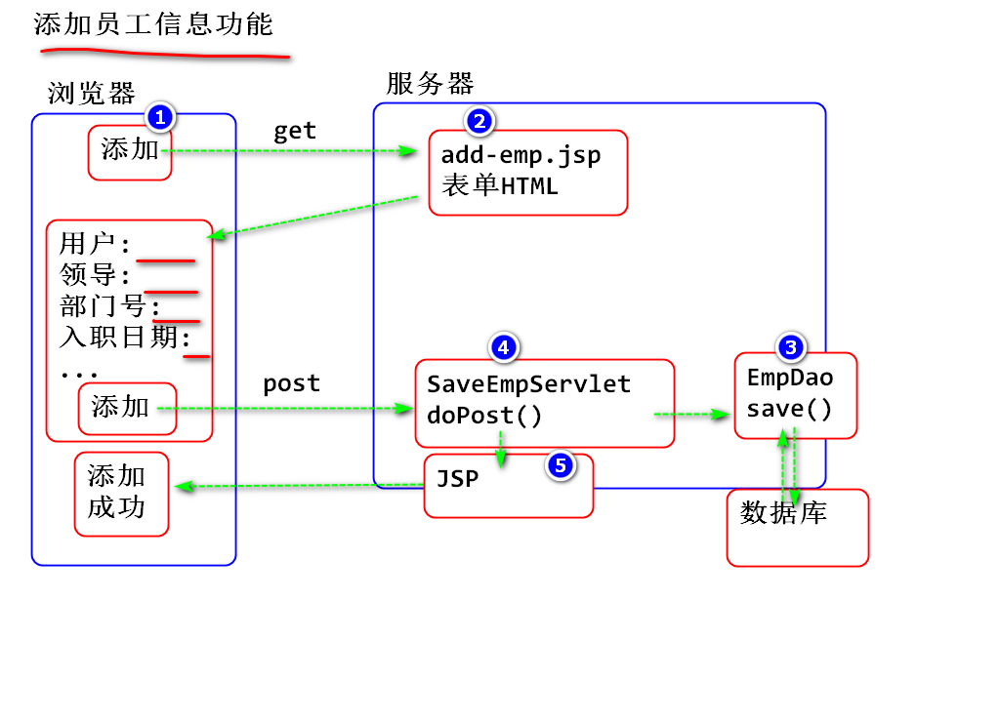
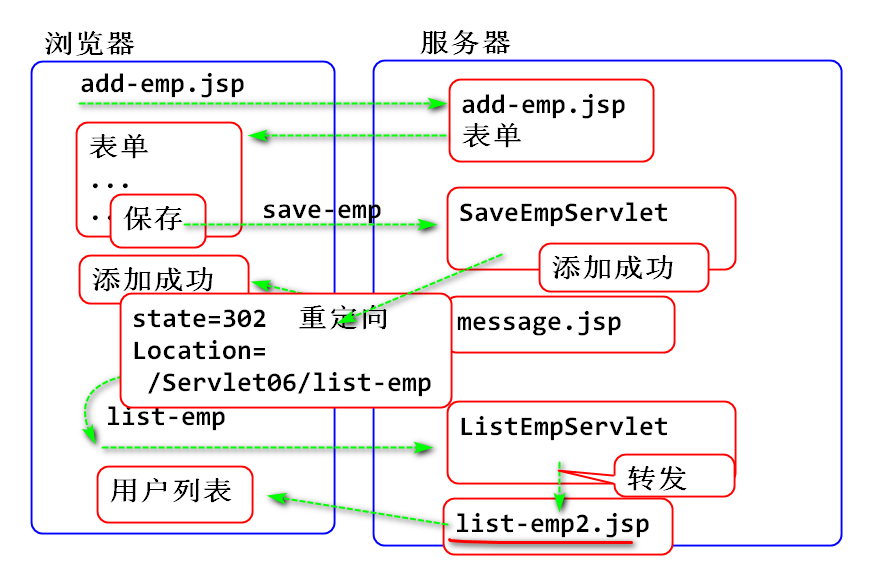
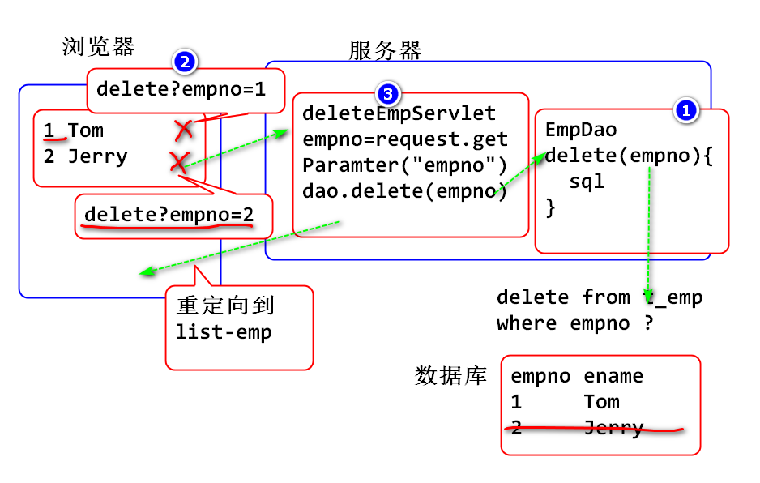

为啥要转发: 就是为了将Servlet和JSP协作为一个请求过程, 其中Servlet用于处理业务过程, JSP负责作为显示组件显示数据.
<artifactId>Servlet06</artifactId>添加原理:

步骤:
在员工列表页面list-emp2.jsp增加添加链接:
...
<h3 class="box-title">员工信息 <a href="add-emp.jsp" class="btn btn-success">添加</a></h3>
...
根据模板页面 starter.html 和 pages/forms/general.html创建 add-emp.jsp
...
<!-- Horizontal Form -->
<div class="box box-info">
<div class="box-header with-border">
<h3 class="box-title">添加新员工信息</h3>
</div>
<!-- /.box-header -->
<!-- form start -->
<form class="form-horizontal"
method="post" action="save-emp">
<div class="box-body">
<div class="form-group">
<label for="ename"
class="col-sm-2 control-label">姓名</label>
<div class="col-sm-10">
<input type="text" class="form-control"
id="ename" name="ename" placeholder="姓名">
</div>
</div>
<div class="form-group">
<label for="mgr"
class="col-sm-2 control-label">领导编号</label>
<div class="col-sm-10">
<input type="text" class="form-control"
id="mgr" name="mgr" placeholder="领导编号">
</div>
</div>
<div class="form-group">
<label for="hiredate"
class="col-sm-2 control-label">入职日期</label>
<div class="col-sm-10">
<input type="date" class="form-control"
id="hiredate" name="hiredate"
placeholder="入职日期">
</div>
</div>
<div class="form-group">
<label for="deptno"
class="col-sm-2 control-label">部门编号</label>
<div class="col-sm-10">
<input type="text" class="form-control"
id="deptno" name="deptno"
placeholder="部门编号">
</div>
</div>
<div class="form-group">
<label for="salary"
class="col-sm-2 control-label">薪资</label>
<div class="col-sm-10">
<input type="number" class="form-control"
id="salary" name="salary"
placeholder="薪资">
</div>
</div>
<div class="form-group">
<label for="comm"
class="col-sm-2 control-label">提成</label>
<div class="col-sm-10">
<input type="number" class="form-control"
id="comm" name="comm"
placeholder="提成">
</div>
</div>
</div>
<!-- /.box-body -->
<div class="box-footer">
<button type="submit" class="btn btn-info pull-right">保存</button>
</div>
<!-- /.box-footer -->
</form>
</div>
<!-- /.box -->
...
在EmpDao中添加 save(emp) 方法, 实现增加Emp对象的功能.
/**
* 添加新用户功能
* 返回添加的行数
*/
public int save(Emp emp) {
//将emp对象中的数据保存到 数据库
String sql = "insert into t_emp "
+ "(empno, ename, mgr, hiredate, "
+ "deptno, salary, comm) values "
+ "(null, ?,?,?,?,?,? )";
try(Connection conn=DBUtil.getConnection()){
PreparedStatement ps =
conn.prepareStatement(sql);
ps.setString(1, emp.getEname());
ps.setInt(2, emp.getMgr());
ps.setDate(3, emp.getHiredate());
ps.setInt(4, emp.getDeptno());
ps.setDouble(5, emp.getSalary());
ps.setDouble(6, emp.getComm());
int n = ps.executeUpdate();
return n;
}catch(Exception e) {
e.printStackTrace();
throw new RuntimeException(e);
}
}
测试 save 方法
public class TestCase {
@Test
public void testSaveEmp() {
Date date = new Date(System.currentTimeMillis());
Emp emp = new Emp(0, "范传奇", 1, date,
1, 1000, 20);
EmpDao dao = new EmpDao();
int n = dao.save(emp);
System.out.println(n);
}
}
编写Servlet, 处理表单post请求:
public class SaveEmpServlet extends HttpServlet {
private static final long serialVersionUID = 1L;
protected void doPost(
HttpServletRequest request,
HttpServletResponse response)
throws ServletException, IOException {
//1. 接收表单参数
//2. 将表单参数保存到数据
//3. 转发到 成功页面
request.setCharacterEncoding("UTF-8");
String ename=request.getParameter("ename");
String mgrId=request.getParameter("mgr");
String date =request.getParameter("hiredate");
String deptId=request.getParameter("deptno");
String salarys=request.getParameter("salary");
String comms = request.getParameter("comm");
System.out.println(ename);
System.out.println(mgrId);
System.out.println(date);
System.out.println(deptId);
System.out.println(salarys);
System.out.println(comms);
try {
//数据类型转换: 将字符串转换为目标数据类型
SimpleDateFormat fmt=
new SimpleDateFormat("yyyy-MM-dd");
int mgr = Integer.parseInt(mgrId);
Date hiredate = new Date(
fmt.parse(date).getTime());
int deptno = Integer.parseInt(deptId);
double salary = Double.parseDouble(salarys);
double comm = Double.parseDouble(comms);
//保存到数据库
Emp emp = new Emp(0, ename, mgr, hiredate, deptno, salary, comm);
EmpDao dao = new EmpDao();
int n = dao.save(emp);
if(n==1) {
//成功
request.setAttribute("message", "添加成功!");
request.getRequestDispatcher(
"/WEB-INF/jsp/message.jsp")
.forward(request, response);
}else {
//失败
request.setAttribute("message", "添加失败!");
request.getRequestDispatcher(
"/WEB-INF/jsp/message.jsp")
.forward(request, response);
}
}catch(Exception e) {
e.printStackTrace();
}
}
}
配置Servlet
<servlet>
<description></description>
<display-name>SaveEmpServlet</display-name>
<servlet-name>SaveEmpServlet</servlet-name>
<servlet-class>day06.SaveEmpServlet</servlet-class>
</servlet>
<servlet-mapping>
<servlet-name>SaveEmpServlet</servlet-name>
<url-pattern>/save-emp</url-pattern>
</servlet-mapping>
利用starter.html 创建 /WEB-INF/jsp/message.jsp 用于显示成功消息
...
<p class="well">
<%=request.getAttribute("message")%>
</p>
...
测试...
重构SaveEmpServlet利用重定向显示添加的结果:

if(n==1) {
String url= request.getContextPath()+"/list-emp";
response.sendRedirect(url);
}else {
//失败
request.setAttribute("message", "添加失败!");
request.getRequestDispatcher(
"/WEB-INF/jsp/message.jsp")
.forward(request, response);
}
原理:

步骤:
EmpDao中添加delete方法
/**
* 按照员工号删除员工信息
*/
public int delete(int empno) {
String sql="delete from t_emp where empno=?";
try(Connection conn=DBUtil.getConnection()){
PreparedStatement ps=
conn.prepareStatement(sql);
ps.setInt(1, empno);
int n = ps.executeUpdate();
return n;
}catch(Exception e) {
e.printStackTrace();
throw new RuntimeException(e);
}
}
测试:
@Test
public void testDeleteEmp() {
EmpDao dao = new EmpDao();
int n = dao.delete(4);
System.out.println(n);
}
修改list-emp2.jsp 添加删除链接:
<table class="table table-bordered">
<tr>
<th style="width: 10px">#</th>
<th>姓名</th>
<th>老板</th>
<th>入职日期</th>
<th>部门编号</th>
<th>薪资</th>
<th>提成</th>
<th></th>
</tr>
<%
List<Emp> list =
(List<Emp>)request.getAttribute("list");
%>
<%for(Emp emp:list){%>
<tr>
<td><%=emp.getEmpno()%></td>
<td><%=emp.getEname()%></td>
<td><%=emp.getMgr()%></td>
<td><%=emp.getHiredate()%></td>
<td><%=emp.getDeptno()%></td>
<td><%=emp.getSalary()%></td>
<td><%=emp.getComm()%></td>
<!-- onclick中出现"return false" 则会阻止事件
-点击事件的响应 -->
<td><a onclick="return confirm('真的删除?吗?')"
href="delete?empno=<%=emp.getEmpno()%>"
class="btn btn-danger btn-xs"
><i class="fa fa-fw fa-remove"></i></a></td>
</tr>
<%}%>
</table>
编写Servlet
public class DeleteEmpServlet extends HttpServlet {
private static final long serialVersionUID = 1L;
protected void doGet(
HttpServletRequest request,
HttpServletResponse response)
throws ServletException, IOException {
String no = request.getParameter("empno");
//请自行打桩测试接收到的参数是否有效
int empno = Integer.parseInt(no);
//调用EmpDao删除数据
EmpDao dao = new EmpDao();
int n = dao.delete(empno);
if(n==1) {
//重定向到 员工列表页面, 显示结果
String path=request.getContextPath()+
"/list-emp";
response.sendRedirect(path);
} else {
//转发到message.jsp显示错误消息
request.setAttribute("message", "删除失败");
request.getRequestDispatcher(
"/WEB-INF/jsp/message.jsp")
.forward(request, response);
}
}
}
测试